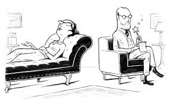

Немного о тестах.
Тесты… Явление сегодня привычное и обыденное: тесты развлекательные и профессиональные, для женщин и для детей, серьезные и шуточные. А как они появились? Само слово «тест» имеет английское происхождение, поэтому логично предположить, что «изобрел» их какой-нибудь английский или американский ученый.
Это отчасти верно. Но на самом деле явление это древнее, и существующее с незапамятных времен. Ученые спорят о времени зарождения первых тестов. Одни называют цифру в две тысячи лет, другие – в четыре. Конечно, каждая из теорий имеет сове обоснование, но, наверное, точную дату появления тестов в человеческом обществе назвать невозможно. Конечно, если вкладывать в понятие «тест» его первоначальный смысл, а именно «испытание, проба».
Испытания различного рода мы можем найти в любом, даже самом древнем обществе. В первобытном мире они касались в основном традиционных занятий людей того времени: охоты и собирательства. Обучая детей жизненно важным навыкам, старшее поколение интуитивно изобретало задания, позволяющие различать съедобные и ядовитые растения, приобретать и оттачивать умение охотиться.
Общество развивалось, менялся и характер испытаний. Стало более важно определять, насколько человек пригоден к той или иной деятельности. Так, в Древней Спарте существовала ступенчатая система отбора наиболее способных и талантливых к военному делу юношей. Создавая в специальных школах-казармах, где воспитывались все без исключения спартанские мальчики, атмосферу соперничества и конкуренции, педагоги-воспитатели внимательно наблюдали за тем, как мальчики проявляют себя в драках, насколько они изобретательны, смелы и выносливы. Это позволяло уже на ранних этапах выделить возможных будущих командиров.
В Древних Афинах, где процветали науки и искусства, также наставники-философы проводили отбор учеников при поступлении в свои школы, обращая, однако, внимание на интеллектуальные способности, умение вести дискуссию и отстаивать свою точку зрения, сохраняя при этом чувство собственного достоинства и самообладание.
Известная школа философа Пифагора отличалась достаточно жесткими условиями отбора, которые, в свою очередь, были заимствованы из практики подготовки жрецов в древнем Египте. Испытания были следующие:
– На смелость и храбрость. Претенденту предлагалось провести ночь в пещере, где, согласно слухам, водились ужасные создания. Если кто-то отказывался или убегал ночью из пещеры, его не допускали к поступлению в школу.
– На нравственную зрелость. Претенденту давали странное сложное задание, справиться с которым он заведомо не мог из-за неподготовленности и отсутствия достаточных знаний, например, предлагали найти ответ на вопрос «Почему додекаэдр, заключенный в сферу, является основной цифрой Вселенной?» Двенадцать часов ученик размышлял в одиночестве в тесной келье, не имея другой пищи, кроме куска хлеба и кружки воды. А затем, изнуренного и отчаявшегося, его выводили в зал собраний, где он должен был изложить свой вариант ответа. Ученики школы задавали каверзные вопросы и осыпали новичка насмешками, а учитель следил за реакцией претендента. Если он терялся, начинал плакать или оскорблять своих оппонентов, считалось, что испытания он не выдержал. А вот проявивший выдержку и выразивший готовность учиться, чтобы исправить свои ошибки, порожденные невежеством, становился учеником школы Пифагора.

А всем нам известные загадки? Что это, как не прообраз современных тестов. Сюжеты, где герою предлагается отгадать загадку (одну или несколько) или выполнить ряд заданий, встречаются и в русском фольклоре и в сказаниях, легендах и эпосах других народов. Значит, такая практика не являлась эксклюзивным «изобретением» какого-то мудреца, а использовалась повсеместно.
Свидетельства таких испытаний мы находим и в канонических религиозных текстах: Библии, Коране. Буддийское направление чань (дзен) предусматривает в процессе изучения основ этого вероучения разрешение учениками так называемых парадоксальных загадок, например, таких:
– Как звучит хлопок одной ладонью?
– Каково было твое лицо, прежде, чем родились твои родители?
В то время, как ученик пытался найти ответы на подобные вопросы, учителя специально создавали им довольно некомфортные условия: стучали палкой, кричали на них и даже били, торопя с ответом. Это делалось для того, чтобы ученик как можно быстрее находил решение поставленной задачи, несмотря ни на что, а также для того, чтобы понять, насколько ученик образован и приблизился ли он к тому, чтобы достичь просветления.
Современному человеку такие методы могут показаться варварскими, но это не значит, что они не работают. Так, в наше время на подготовительном отделении Омского университета провели эксперимент. Преподаватели стали сознательно создавать психологическое напряжение, когда проводили опрос слушателей. Ответа требовали немедленно, опрос проводился в довольно жесткой форме, на повышенных тонах. Студентов вкратце познакомили с целью и сутью этой методики, и они воспринимали такую форму работы без внутреннего протеста. В результате такой подготовки более 90% слушателей подготовительных курсов успешно сдали вступительные экзамены в университет.
Другим примером удачного использования древней тестовой методики может служить прием, до сих пор используемый специалистами служб занятости при работе с гражданами, нуждающимися в трудоустройстве. Это вопрос древнего мудреца, обращенный к толпе нищих: «Кто хотел бы быть богатым?». Естественно, каждый из нищих выразил такое желание. Тогда мудрец спросил: «Что бы вы хотели изменить в себе, чтобы стать богатым?» На это вопрос нищие отвечали, что измениться должны все вокруг: богатые и власть предержащие, супруги и родственники, но не они. Такие настроения можно встретить и у современных безработных.
Почему же все эти древние загадки и задания можно считать прообразом современных тестов? Так же, как и современные тесты, древние испытания предполагали соблюдение ряда условий:
Одинаковые «исходные данные» для всех испытуемых
Постепенное усложнение заданий по мере прохождения испытания
Оценка успешности прохождения испытания не только исходя из результата, но и путем наблюдения процесса выполнения задания.
Поделись со своими друзьями:
Вконтакте
Twitter
Facebook
Tumblr